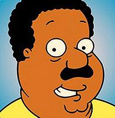
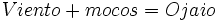

Ojaio
 De: La Frikipedia, la enciclopedia extremadamente seria.
De: La Frikipedia, la enciclopedia extremadamente seria.
| De la serie la Lingüística es fácil:
|
| Ojaio
|
| 
|
Cleveland, Capital de Ohio Ojaio
|
|
| Descubridor
|
El primer japonés
|
| Idiomas habituales
|
!Japonés, coño!
|
| Estructura
|
De hormigón
|
| Morfología
|
¿Y ezo que é?
|
| Dificultad
|
Nula(la dice hasta una Gal)
|
| Frecuencia de uso
|
Solo entre Otakus
|
| Notas
|
Muy bajas(con esto no apruebas el examen de Japo)
|
La palabra "Ojaio" tiene diversos significados en millones de idiomas y, aunque comúnmente se cree, no pertenece a Paco Porras ni huele a embutido.
- La palabra Ojaio en inglés (escrita Ohio) viene a significar el nombre de un estado americano, donde se cree que se encuentra el oro de los Pitufos. Se encuentra a veinte kilómetros de Nueva York y a unos cuarenta de Tokio. Su comida típica es el puré de patatas y la paella. La capital del Estado es Sevilla.
- Ojaio existe también en japonés. Su traducción al español es "Buenos días", "hola", y "necesito té". Debido a la conquista del mundo por parte de Las Supremas de Móstoles, obligó a los nipones a pagar por decir esa palabra, teniendo que sustituirla por la expresión "hace ruido".
- Ojaio significa también hijo, en chino clementín.
- Como hay millones de traducciones de Ojaio, no hay espacio para ponerlas todas, por esa razón resumimos con un sinónimo en español. Ojaio (en español escrito Ojaio) tiene un significado obsceno, que en muchas partes de España se ha prohibido. Ojaio es sinónimo de estornudo (sé que estoy violando numerosas leyes internacionales al decir esto). Ojaio es la acción y efecto de ojaiar, que consiste en evacuar por la cueva de los enanos malvados viento y mocos, usualmente a partes desproporcionadas. Esto sigue un esquema muy simple: .
- También se usa para referirse a la zona donde termina la espalda (osea el ojete o culo).
Autor(es):
- Hari Seldon
- Mr.Mocos
- MURO DE AGUAS
- Epikurolibre
- Viento
- Cibercrank
- AlemanH
- Veni Vidi Vici
- Catacras
- E1324
Frikipedia 2005-2016, Licencia
GFDL 1.2 - Extraído por FrikiLeaks